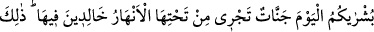
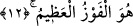

Merfû bir hadîs-i şerîfte rivâyet edildiğine göre, “Nâfile ibâdet kulun Rabbine
hediyesidir. Öyleyse sizden biriniz hediyesini en iyi ve en güzel yapsın.”[259]
buyrulmuştur. Özet olarak, kerim ve cömert olan kimse ödünç verirken en güzel bir
şekilde verir, hediyeye de en güzel şekilde karşılık verir.
12. Mü’min erkeklerle mü’min kadınları, önlerinden ve sağlarından,
(amellerinin) nurları aydınlatıp giderken gördüğün günde, (onlara): Bugün
müjdeniz, zemininden ırmaklar akan ve içlerinde ebedî kalacağınız cennetlerdir,
denilir. İşte büyük kurtuluş budur.
“Mü’min erkeklerle mü’min kadınları,” Bu günün büyüklük ve önemini belirtmek
için yevme zarfı gizli bulunan hatırla anlamındaki fiil ile mensûbdur. Yâni kıyâmet günü
sırât üzerinde onları gördüğün ânı hatırla. “Önlerinden ve sağlarından (îman ve
amellerinin) nurları aydınlatıp giderken gördüğün günde.” Sa’y, koşmadan hafif hızlı
yürümenin adıdır. İyilik veya kötülük için olan bir işin ciddiyetini belirtmek ve
çoğunlukla güzel işler hakkında kullanılır. Eymân kelimesi, organ mânâsındaki yemîn
kelimesinin çoğuludur. Burada sağ taraf kasdedilmiştir. Beyne kelimesi yes’â fiilinin
zarfıdır.
Ebü’l-Leys demiştir ki, nur sağlarında sollarında ve önlerinde olur, fakat sol açıkça
zikir edilmemiştir. Fethu’r-Rahmân adlı eserde şöyle denilmiştir: Âyet-i kerîmede
özellikle önleri zikir edilmiştir. Çünkü insan önünde ışığa ihtiyaç duyar. Önem ve
değerini belirtmek için özellikle sağ taraf zikredilmiştir. Aslında bütün yönleri temsil
etmektedir.
Keşfü’l-esrar’da şöyle denilmiştir: Çünkü cennetin yolu sağdadır ve mü’minlerin
istikametindedir. Cehennem ehlinin yolu ise sol taraftadır. Bir hadîs-i şerîfte şöyle
buyurulmuştur: “Ben havzımın başında iken, geliniz diye yüksek sesle çağıracağım,
bir de bir takım insanları sol tarafın yolunu tutmuş, onlar benden başka tarafa
koşarak gidiyorlardı. Ben dikkat edin bana gelin, diye yüksek sesle çağırırken,
senden sonra onların dinde neler çıkardıklarını bilmiyorsun denilecek. Bunun
üzerine ben öyleyse uzaklaşsınlar, derim”.[260]
Fakir (Bursevî) der ki; âyet-i kerîmede her taraflarından anlamındaki /eydi
kelimesinin zikredilmesi Allah’a en yakın olan mukarrebîne işârettir. Onlar zâhiren ve
bâtınen ensesi olmayan yüzden ibâret olacaklardır. Onlar için bütün yönlerden
aydınlatan mutlak bir nur vardır. Sağ anlamındaki /eymân kelimesinin zikredilmesi